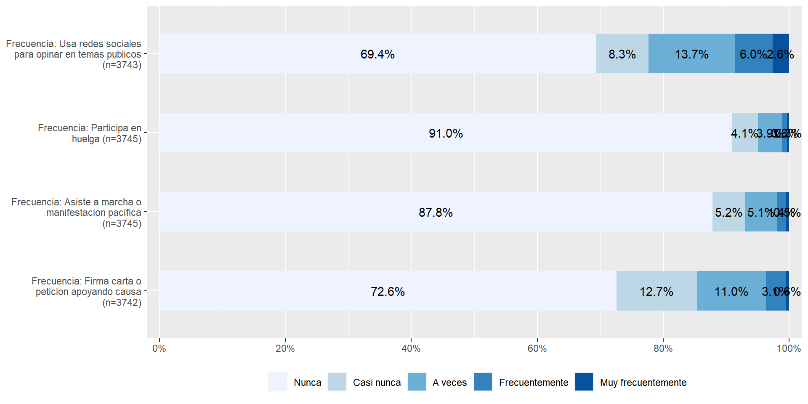

pacman::p_load(dplyr, summarytools, sjPlot,texreg, corrplot,ggplot2,sjlabelled, fastDummies)Práctica 7 Correlación y regresióna
Metodología I - Magíster en Ciencias Sociales
Presentación
La siguiente práctica tiene el objetivo de repasar en la interpretación de coeficientes de correlación y la construcción de índices, así como también en la interpretación de coeficientes de regresión lineal y logística. Para ello, utilizaremos la base de datos de la tercera ola del Estudio Longitudinal Social del Chile 2018 con el objetivo de analizar los determinantes de la Participación Ciudadana.
La versión original de este ejercicio proviene del curso de Estadística multivariada versión 2022.
Librerías
Datos
El Estudio Longitudinal Social del Chile ELSOC, único en Chile y América Latina, consiste en encuestar a casi 3.000 chilenos, anualmente, a lo largo de una década. ELSOC ha sido diseñado para evaluar la manera cómo piensan, sienten y se comportan los chilenos en torno a un conjunto de temas referidos al conflicto y la cohesión social en Chile. La población objetivo son hombres y mujeres entre 15 y 75 años de edad con un alcance nacional, donde se obtuvo una muestra final de 3748 casos en el año 2018.
load("../files/data/elsoc2.RData")#Cargamos la base de datos desde internet
load(url("https://github.com/Kevin-carrasco/metod1-MCS/raw/main/files/data/elsoc2.RData"))Explorar datos
A partir de la siguiente tabla se obtienen estadísticos descriptivos que luego serán relevantes para realizar las transformaciones y análisis posteriores.
view_df(elsoc,max.len = 50)| ID | Name | Label | Values | Value Labels |
|---|---|---|---|---|
| 1 | sexo | Sexo entrevistado | 0 1 |
Hombre Mujer |
| 2 | edad | Edad entrevistado | range: 18-90 | |
| 3 | educ | Nivel educacional | 1 2 3 4 5 |
Primaria incompleta menos Primaria y secundaria baja Secundaria alta Terciaria ciclo corto Terciaria y Postgrado |
| 4 | pospol | Autoubicacion escala izquierda-derecha | 1 2 3 4 |
Derecha Centro Izquierda Indep./Ninguno |
| 5 | part01 | Frecuencia: Firma carta o peticion apoyando causa | 1 2 3 4 5 |
Nunca Casi nunca A veces Frecuentemente Muy frecuentemente |
| 6 | part02 | Frecuencia: Asiste a mbackground-color:#eeeeeeha o manifestacion pacifica |
1 2 3 4 5 |
Nunca Casi nunca A veces Frecuentemente Muy frecuentemente |
| 7 | part03 | Frecuencia: Participa en huelga | 1 2 3 4 5 |
Nunca Casi nunca A veces Frecuentemente Muy frecuentemente |
| 8 | part04 | Frecuencia: Usa redes sociales para opinar en temas publicos |
1 2 3 4 5 |
Nunca Casi nunca A veces Frecuentemente Muy frecuentemente |
| 9 | inghogar | Ingreso total del hogar | range: 30000-17000000 | |
| 10 | inghogar_t | Ingreso total del hogar (en tramos) | 1 2 3 4 5 6 7 8 9 10 11 12 13 14 15 16 17 18 19 20 |
Menos de $220.000 mensuales liquidos De $220.001 a $280.000 mensuales liquidos De $280.001 a $330.000 mensuales liquidos De $330.001 a $380.000 mensuales liquidos De $380.001 a $420.000 mensuales liquidos De $420.001 a $470.000 mensuales liquidos De $470.001 a $510.000 mensuales liquidos De $510.001 a $560.000 mensuales liquidos De $560.001 a $610.000 mensuales liquidos De $610.001 a $670.000 mensuales liquidos De $670.001 a $730.000 mensuales liquidos De $730.001 a $800.000 mensuales liquidos De $800.001 a $890.000 mensuales liquidos De $890.001 a $980.000 mensuales liquidos De $980.001 a $1.100.000 mensuales liquidos De $1.100.001 a $1.260.000 mensuales liquidos De $1.260.001 a $1.490.000 mensuales liquidos De $1.490.001 a $1.850.000 mensuales liquidos De $1.850.001 a $2.700.000 mensuales liquidos Mas de $2.700.000 a mensuales liquidos |
| 11 | tamhogar | Habitantes del hogar | range: 1-14 | |
Variable dependiente: participación política
plot_stackfrq(elsoc[,c("part01","part02","part03","part04")]) + theme(legend.position="bottom")corrplot.mixed(cor(select(elsoc,part01,part02,part03,part04),
use = "complete.obs"))
elsoc <- elsoc %>% mutate(partpol=rowSums(select(., part01,part02,part03,part04)))
summary(elsoc$partpol) Min. 1st Qu. Median Mean 3rd Qu. Max. NA's
4.000 4.000 4.000 5.473 6.000 20.000 8 Variable independiente: ingresos
ingresos hogar variable continua
summary(elsoc$inghogar) Min. 1st Qu. Median Mean 3rd Qu. Max. NA's
30000 300000 500000 678843 800000 17000000 668 ingreso hogar en tramos
sjmisc::frq(elsoc$inghogar_t,
out = "txt",
show.na = T) %>% knitr::kable()
|
podemos obtener la mediana de cada tramo
elsoc$inghogar_t[elsoc$inghogar_t==1] <-( 220000 ) # [1] "Menos de $220.000 mensuales liquidos"
elsoc$inghogar_t[elsoc$inghogar_t==2] <-(220001 +280000 )/2 # [2] "De $220.001 a $280.000 mensuales liquidos"
elsoc$inghogar_t[elsoc$inghogar_t==3] <-(280001 +330000 )/2 # [3] "De $280.001 a $330.000 mensuales liquidos"
elsoc$inghogar_t[elsoc$inghogar_t==4] <-(330001 +380000 )/2 # [4] "De $330.001 a $380.000 mensuales liquidos"
elsoc$inghogar_t[elsoc$inghogar_t==5] <-(380001 +420000 )/2 # [5] "De $380.001 a $420.000 mensuales liquidos"
elsoc$inghogar_t[elsoc$inghogar_t==6] <-(420001 +470000 )/2 # [6] "De $420.001 a $470.000 mensuales liquidos"
elsoc$inghogar_t[elsoc$inghogar_t==7] <-(470001 +510000 )/2 # [7] "De $470.001 a $510.000 mensuales liquidos"
elsoc$inghogar_t[elsoc$inghogar_t==8] <-(510001 +560000 )/2 # [8] "De $510.001 a $560.000 mensuales liquidos"
elsoc$inghogar_t[elsoc$inghogar_t==9] <-(560001 +610000 )/2 # [9] "De $560.001 a $610.000 mensuales liquidos"
elsoc$inghogar_t[elsoc$inghogar_t==10]<-(610001 +670000 )/2 # [10] "De $610.001 a $670.000 mensuales liquidos"
elsoc$inghogar_t[elsoc$inghogar_t==11]<-(670001 +730000 )/2 # [11] "De $670.001 a $730.000 mensuales liquidos"
elsoc$inghogar_t[elsoc$inghogar_t==12]<-(730001 +800000 )/2 # [12] "De $730.001 a $800.000 mensuales liquidos"
elsoc$inghogar_t[elsoc$inghogar_t==13]<-(800001 +890000 )/2 # [13] "De $800.001 a $890.000 mensuales liquidos"
elsoc$inghogar_t[elsoc$inghogar_t==14]<-(890001 +980000 )/2 # [14] "De $890.001 a $980.000 mensuales liquidos"
elsoc$inghogar_t[elsoc$inghogar_t==15]<-(980001 +1100000)/2 # [15] "De $980.001 a $1.100.000 mensuales liquidos"
elsoc$inghogar_t[elsoc$inghogar_t==16]<-(1100001+1260000)/2 # [16] "De $1.100.001 a $1.260.000 mensuales liquidos"
elsoc$inghogar_t[elsoc$inghogar_t==17]<-(1260001+1490000)/2 # [17] "De $1.260.001 a $1.490.000 mensuales liquidos"
elsoc$inghogar_t[elsoc$inghogar_t==18]<-(1490001+1850000)/2 # [18] "De $1.490.001 a $1.850.000 mensuales liquidos"
elsoc$inghogar_t[elsoc$inghogar_t==19]<-(1850001+2700000)/2 # [19] "De $1.850.001 a $2.700.000 mensuales liquidos"
elsoc$inghogar_t[elsoc$inghogar_t==20]<-(2700000) # [20] "Mas de $2.700.000 a mensuales liquidos"y luego imputar este valor medio a los casos NA
elsoc$inghogar_i <- ifelse(test = (is.na(elsoc$inghogar)), #¿existen NA en ingresos?
yes = elsoc$inghogar_t, #VERDADERO, remplazar con la media del tramo
no = elsoc$inghogar) #FALSE, mantener la variable original.
elsoc$inghogar_i <- set_label(elsoc$inghogar_i,"Ingreso total del hogar (imputada)")elsoc$ing_pcap <- elsoc$inghogar_i/elsoc$tamhogar
elsoc$ing_pcap <- set_label(elsoc$ing_pcap,"Ingreso per cápita del hogar")elsoc$quintile<- dplyr::ntile(x = elsoc$ing_pcap,
n = 5) # n de categorias, para quintiles usamos 5
elsoc$quintile <- factor(elsoc$quintile,c(1,2,3,4,5), c("Quintil 1","Quintil 2","Quintil 3","Quintil 4","Quintil 5"))
elsoc %>%
group_by(quintile) %>%
summarise(n=n(),
Media=mean(ing_pcap,na.rm = T),
Mediana=median(ing_pcap,na.rm = T)) %>%
knitr::kable()| quintile | n | Media | Mediana |
|---|---|---|---|
| Quintil 1 | 711 | 62859.09 | 66666.67 |
| Quintil 2 | 711 | 112218.97 | 111250.12 |
| Quintil 3 | 710 | 167748.23 | 166666.67 |
| Quintil 4 | 710 | 262710.27 | 250000.50 |
| Quintil 5 | 710 | 710246.41 | 500000.00 |
| NA | 196 | NaN | NA |
elsoc$quintilemiss <- factor(elsoc$quintile,ordered = T)
elsoc$quintilemiss <- ifelse(test=is.na(elsoc$quintilemiss),yes = 6,no = elsoc$quintilemiss)
elsoc$quintilemiss <- factor(elsoc$quintilemiss ,levels = c(1,2,3,4,5,6),labels = c("Quintil 1","Quintil 2","Quintil 3","Quintil 4","Quintil 5","Missing"))
elsoc %>% group_by(quintilemiss) %>% summarise(n=n())# A tibble: 6 × 2
quintilemiss n
<fct> <int>
1 Quintil 1 711
2 Quintil 2 711
3 Quintil 3 710
4 Quintil 4 710
5 Quintil 5 710
6 Missing 196Variables dummy
Una forma de pasar una variable categórica a dummies es con la función dummy_cols del paquete fastDummies
elsoc <- dummy_cols(elsoc, select_columns = "quintilemiss")
head(elsoc[,16:22]) quintilemiss quintilemiss_Quintil 1 quintilemiss_Quintil 2
1 Quintil 1 1 0
2 Quintil 5 0 0
3 Quintil 1 1 0
4 Quintil 5 0 0
5 Missing 0 0
6 Quintil 3 0 0
quintilemiss_Quintil 3 quintilemiss_Quintil 4 quintilemiss_Quintil 5
1 0 0 0
2 0 0 1
3 0 0 0
4 0 0 1
5 0 0 0
6 1 0 0
quintilemiss_Missing
1 0
2 0
3 0
4 0
5 1
6 0¿cómo hacerlo para una variable numérica?
También existen muchas formas, como por ejemplo establecer como punto de corte la media o la mediana, o ver la distribución de las respuestas y tratar de establecer una distribución homogénea entre las dos nuevas categorías.
Si recordamos la distribución de nuestra variable dependiente antes de construir el índice de participación:
plot_stackfrq(elsoc[,c("part01","part02","part03","part04")]) + theme(legend.position="bottom")
y luego en el índice de participación
summary(elsoc$partpol) Min. 1st Qu. Median Mean 3rd Qu. Max. NA's
4.000 4.000 4.000 5.473 6.000 20.000 8 Podemos notar que la mayoría de las respuestas se agrupan en la categoría “nunca” de las variables por separado y luego en el índice la mediana también corresponde al valor mínimo posible de “4” que es la suma de todas las personas que nunca han participado en ninguna de las opciones. Por lo tanto, tenemos dos criterios que nos permiten decidir que nuestra variable dependiente puede ser considera como dummy bajo los valores 0=nunca ha participado; y 1=si ha participado.
Una forma de hacer esta agrupación de valores es con la función case_when del paquete dplyr (similar a ifelse)
elsoc <- elsoc %>% rowwise() %>% mutate(partpol_dummy = case_when(partpol==4~0,
partpol>4~1,
TRUE ~ NA))
table(elsoc$partpol_dummy)
0 1
2074 1666 Regresión lineal
veamos primero las diferencias de usar cada tipo de variable de ingreso
fit01<- lm(partpol~ing_pcap,data=elsoc)
fit02<- lm(partpol~quintile,data=elsoc)
fit03<- lm(partpol~quintilemiss,data=elsoc)labs01 <- c("Intercepto","Ingreso per/cap",
"Quintil 2","Quintil 3","Quintil 4","Quintil 5",
"Quintil 2","Quintil 3","Quintil 4","Quintil 5","Quintil perdido")#screenreg para que se vea en R
screenreg(list(fit01,fit02,fit03),custom.coef.names = labs01)# htmlreg para que se vea en el sitio web
htmlreg(list(fit01,fit02,fit03),doctype = FALSE,
custom.model.names = c("Modelo 1","Modelo 2","Modelo 3"),
custom.coef.names = labs01)| Modelo 1 | Modelo 2 | Modelo 3 | |
|---|---|---|---|
| Intercepto | 5.25*** | 4.99*** | 4.99*** |
| (0.05) | (0.08) | (0.09) | |
| Ingreso per/cap | 0.00*** | ||
| (0.00) | |||
| Quintil 2 | 0.19 | 0.19 | |
| (0.12) | (0.12) | ||
| Quintil 3 | 0.51*** | 0.51*** | |
| (0.12) | (0.12) | ||
| Quintil 4 | 0.60*** | 0.60*** | |
| (0.12) | (0.12) | ||
| Quintil 5 | 1.08*** | 1.08*** | |
| (0.12) | (0.12) | ||
| Quintil perdido | 0.66*** | ||
| (0.18) | |||
| R2 | 0.01 | 0.03 | 0.02 |
| Adj. R2 | 0.01 | 0.03 | 0.02 |
| Num. obs. | 3546 | 3546 | 3740 |
| ***p < 0.001; **p < 0.01; *p < 0.05 | |||
El tercer modelo, con el quintil de casos perdidos, es el que entrega más información y además tiene mayor cantidad de casos (3740).
fit04<- lm(partpol~sexo,data=elsoc)
fit05<- lm(partpol~sexo+edad,data=elsoc)
fit06<- lm(partpol~sexo+edad+quintilemiss,data=elsoc)
fit07<- lm(partpol~sexo+edad+quintilemiss+pospol,data=elsoc)
labs02 <- c("Intercepto","Sexo (mujer=1)","Edad",
"Quintil 2","Quintil 3","Quintil 4","Quintil 5","Quintil perdido",
"Izquierda (ref. derecha)","Centro","Idep./Ninguno")screenreg(list(fit04,fit05,fit06, fit07),custom.coef.names = labs02)htmlreg(list(fit04,fit05,fit06, fit07),doctype = FALSE,
custom.model.names = c("Modelo 1","Modelo 2","Modelo 3", "Modelo 4"),
custom.coef.names = labs02)| Modelo 1 | Modelo 2 | Modelo 3 | Modelo 4 | |
|---|---|---|---|---|
| Intercepto | 5.56*** | 7.62*** | 7.03*** | 7.97*** |
| (0.06) | (0.12) | (0.15) | (0.16) | |
| Sexo (mujer=1) | -0.13 | -0.08 | 0.07 | 0.12 |
| (0.08) | (0.07) | (0.07) | (0.07) | |
| Edad | -0.04*** | -0.04*** | -0.04*** | |
| (0.00) | (0.00) | (0.00) | ||
| Quintil 2 | 0.23* | 0.21 | ||
| (0.12) | (0.11) | |||
| Quintil 3 | 0.51*** | 0.51*** | ||
| (0.12) | (0.11) | |||
| Quintil 4 | 0.56*** | 0.50*** | ||
| (0.12) | (0.11) | |||
| Quintil 5 | 1.02*** | 0.88*** | ||
| (0.12) | (0.12) | |||
| Quintil perdido | 0.51** | 0.59*** | ||
| (0.18) | (0.18) | |||
| Izquierda (ref. derecha) | -1.04*** | |||
| (0.10) | ||||
| Centro | -1.13*** | |||
| (0.11) | ||||
| Idep./Ninguno | -1.60*** | |||
| (0.10) | ||||
| R2 | 0.00 | 0.09 | 0.11 | 0.17 |
| Adj. R2 | 0.00 | 0.09 | 0.11 | 0.17 |
| Num. obs. | 3740 | 3740 | 3740 | 3656 |
| ***p < 0.001; **p < 0.01; *p < 0.05 | ||||
El Modelo 1 indica que las mujeres participan 0.13 unidades menos en comparación con los hombres, sin embargo, esta relación no es estadísticamente significativa (p>0.05).
El Modelo 2 indica que por cada unidad que aumenta la edad, la participación política disminuye en promedio 0.04 unidades, con un 99.9% de significación estadístico y manteniendo el sexo constante. Esta relación es consistente en los otros dos modelos.
El Modelo 3 indica que en medida que aumenta el ingreso, la participación política tiende a ser más alta. En específico, en comparación con el menor quintil de ingreso, al pertenecer a un quintil de ingreso 2 (p<0.05), 3, 4 y 5 (p<0.001), la participación política aumenta, manteniendo el resto de las variables constantes. Este efecto disminuye un poco en el modelo siguiente, pero mantiene un efecto lineal (a mayor quintil, mayor participación).
En el Modelo 4 que incluye la posición política de los/as encuestados, la participación política de las personas de izquierda, centro o independiente/ninguno es menor en comparación con las personas de derecha, con una significación estadística del 99.9%, manteniendo el resto de las variables constantes.
Regresión logística
fit01log <- glm(partpol_dummy ~ sexo, data = elsoc, family = "binomial")
fit02log <- glm(partpol_dummy ~ sexo+edad,data=elsoc, family = "binomial")
fit03log <- glm(partpol_dummy ~ sexo+edad+quintilemiss,data=elsoc, family = "binomial")
fit04log <- glm(partpol_dummy ~ sexo+edad+quintilemiss+pospol,data=elsoc, family = "binomial")screenreg(list(fit01log,fit02log,fit03log, fit04log),custom.coef.names = labs02)htmlreg(list(fit01log,fit02log,fit03log, fit04log),doctype = FALSE,
custom.model.names = c("Modelo 1 (log odds)","Modelo 2(log odds)","Modelo 3(log odds)", "Modelo 4(log odds)"),
custom.coef.names = labs02)| Modelo 1 (log odds) | Modelo 2(log odds) | Modelo 3(log odds) | Modelo 4(log odds) | |
|---|---|---|---|---|
| Intercepto | -0.12* | 1.92*** | 1.39*** | 2.11*** |
| (0.05) | (0.12) | (0.15) | (0.17) | |
| Sexo (mujer=1) | -0.16* | -0.12 | 0.03 | 0.07 |
| (0.07) | (0.07) | (0.07) | (0.08) | |
| Edad | -0.04*** | -0.04*** | -0.05*** | |
| (0.00) | (0.00) | (0.00) | ||
| Quintil 2 | 0.24* | 0.22 | ||
| (0.12) | (0.12) | |||
| Quintil 3 | 0.45*** | 0.45*** | ||
| (0.12) | (0.12) | |||
| Quintil 4 | 0.56*** | 0.51*** | ||
| (0.12) | (0.12) | |||
| Quintil 5 | 0.96*** | 0.84*** | ||
| (0.12) | (0.12) | |||
| Quintil perdido | 0.51** | 0.61*** | ||
| (0.17) | (0.18) | |||
| Izquierda (ref. derecha) | -0.64*** | |||
| (0.10) | ||||
| Centro | -0.55*** | |||
| (0.11) | ||||
| Idep./Ninguno | -1.31*** | |||
| (0.10) | ||||
| AIC | 5138.66 | 4750.35 | 4683.97 | 4415.87 |
| BIC | 5151.12 | 4769.03 | 4733.79 | 4484.11 |
| Log Likelihood | -2567.33 | -2372.17 | -2333.99 | -2196.93 |
| Deviance | 5134.66 | 4744.35 | 4667.97 | 4393.87 |
| Num. obs. | 3740 | 3740 | 3740 | 3656 |
| ***p < 0.001; **p < 0.01; *p < 0.05 | ||||
En el Modelo 1, en comparación con los hombres, el log-odds de participación política para las mujeres disminuye en 0.16 (p<0.05). Este efecto se vuelve positivo al controlar por el resto de variables en los modelos 3 y 4, pero pierde su significación estadística.
En el Modelo 2 se incluye la variable edad, donde su efecto indica que por cada unidad que aumenta la edad, el log-odds de participación política disminuye en 0.04 (p<0.001), manteniendo el sexo constante. Este efecto es consistente en el resto de los modelos al controlar por las demás variables.
En el Modelo 3 se incluyen los quintiles de ingreso como variable predictora que indican que, en comparación con el menor quintil de ingreso, al poseer un quintil de ingreso de 3, 4 o 5 los log-odds de participación política aumentan (p<0.001), manteniendo el resto de las variables constantes. Este efecto disminuye un poco en el modelo siguiente, pero mantiene un efecto lineal (a mayor quintil, mayor log-odds).
Finalmente, en el Modelo 4 que incluye la posición política de los/as encuestados, el log-odds de ser de izquierda, centro o independiente/ninguno disminuye en comparación con las personas de derecha (p<0.001), manteniendo el resto de las variables constantes.